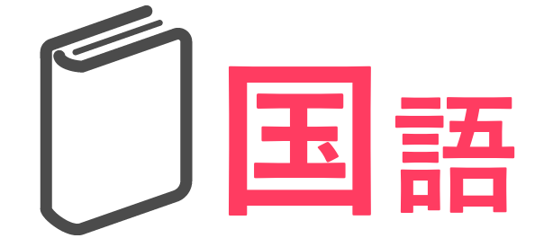
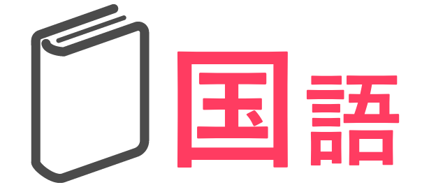

回文を作る
 

回文を作るプログラムです。ほかの科目の２年生のプログラムと比べると、少し難しく感じますが、それほど量はありません。
プログラムするスプライト |
|
| １．準備
緑の🏴がおされたら、 まずは、回文にする言葉を入力させるブロックを置き、ねこさんが入力された言葉を復唱します。 そして、のちに回文を作るための変数を初期化します。 以前にこの変数たちに入れられていたものを消すためです。 |
|
| ２．回文を作る
次に、入力された言葉を回文にします。 命令ブロックには並び替えというのはありません。 なので、並び替えるときの一連の動きを考えてみます。 回文にする手順は、左の文字から順番に、回文という変数に入れていきます。たとえば、「おにぎり」という言葉を入れるとします。
このscratchでは、並び替えるブロックはありませんが、ない代わりに、
さらに、 入力された文字の、〇番目の数と回文を新たに回文に格納する という作業を文字の数分繰り返しています。 ちなみに答えの長さというのは、文字の桁です。おにぎりだと文字四つ分、おちゃづけだと文字五つ分の長さという感じです。 なのでそれぞれの長さは４，５という風になります。 何回も回文が出てくるけどどういうこと？！となりますが、 正しい言い方ではないですが、変数というのは更新できます。 新しいものと今の変数を組み合わせた物に書き換えるという感じです。 さて、入力された文字の、〇番目の数と回文を新たに回文に格納する という作業を文字の数分繰り返しをおえ、回文という変数に回文された言葉が格納されたら、最後に発言をします。 |
|